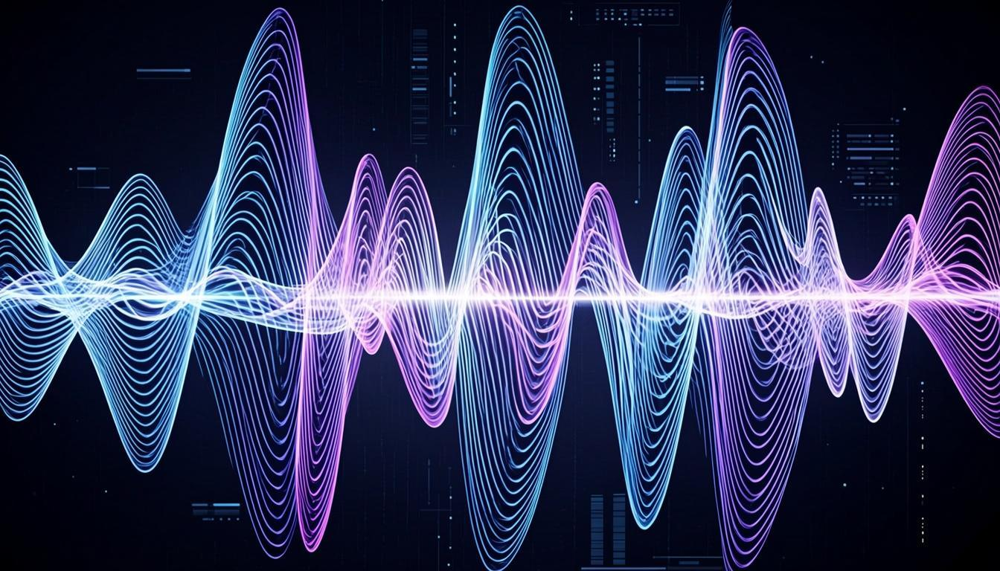
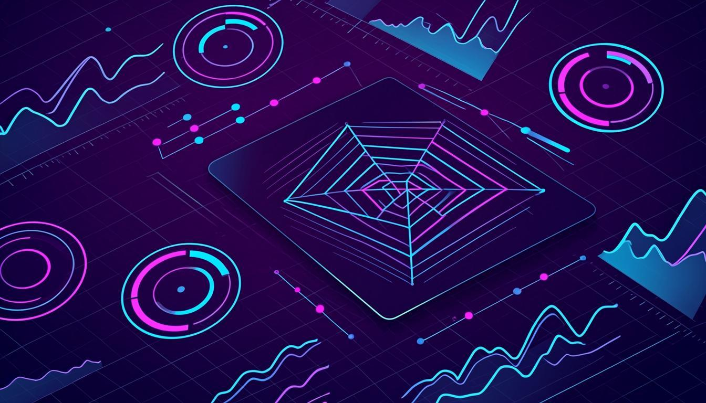
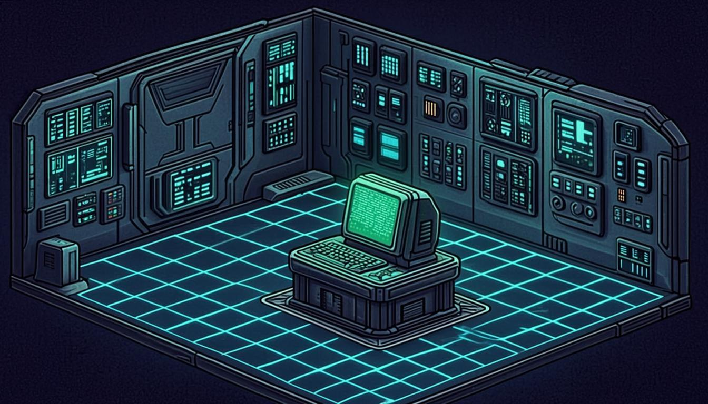

Not a Website. An Interactive Product.
Parth
Varekar
B.Tech Computer Engineering student (Mumbai University, 2024–2028) building local-first AI systems — speech pipelines, RAG knowledge bases, browser AI safety, and educational games. I ship to learn, and I learn by shipping.
Who I Am.
I'm Parth — a B.Tech Computer Engineering student at K.C. College of Engineering (Mumbai University), class of 2028. I build AI systems because I'm curious about how intelligence can be engineered to run locally, privately, and reliably — not just routed through someone else's API.
In 2026 I completed a 120-hour Data Science & Analytics internship at Imarticus Learning (A+ grade), where I worked with SQL, Python/Colab, and Power BI on real datasets. Outside of coursework I ship projects — six of which are documented below, all verified and on GitHub.
Based in Mumbai. Open to internships and collaborations in AI systems, full-stack engineering, and developer tools.
What I Build.
I build across the AI engineering stack — from C++-backed speech pipelines (whisper.cpp + llama.cpp) to in-browser Python execution (Pyodide/WebAssembly) to Chrome MV3 extensions that intercept and inspect AI agent traffic at runtime. Most of my projects are local-first: your data stays on your machine.
I care about architecture over hype. The projects below are real, documented, and reproducible — not API wrappers with a landing page.
How I Think.
Systems thinking over surface fixes. When a latency budget slips or a detection engine returns false positives, I don't patch the symptom — I re-examine the pipeline. Most of my projects started as personal problems I wanted solved properly: a GATE prep tool that didn't exist, a dictation daemon that respected my privacy, a safety layer for browser AI agents that nobody had shipped yet.
I believe in controlling the stack end-to-end — from the compiled C++ binary to the last pixel on screen. Theory is the starting point; shipping is the test.
Where I Started.
My first shipped extension was Color Vision Assistant (2025) — built with a team to help low-vision users browse the web. It implemented a “partial blindness” mode via CSS/JS overlays that boosted contrast, font weight, and brightness. Crude by today's standards, but it's where I learned Chrome MV3, content scripts, and that software can quietly change someone's day. It's why accessibility still informs how I build.
Currently exploring:
- _ Local LLM deployments & quantization (whisper.cpp, llama.cpp, Ollama).
- _ In-browser Python execution via Pyodide/WebAssembly.
- _ Multi-agent systems for media intelligence & content analysis.
- _ Runtime safety layers for browser-based AI agents.
System.Nodes // Projects
Deployed
Architecture.

AI VOICE // DEEP
WIPWhisperFlow
Offline, zero-cloud speech-to-text + LLM pipeline. whisper.cpp transcribes, llama.cpp reasons — no internet after setup.

FULL-STACK // DEEP
LIVEStudyOS
A local-first PWA that runs my GATE 2027 prep like a SaaS product — 13 Prisma models, test-runner state machine, offline-first.

GAME + WASM // DEEP
WIPNexus-AI
A 2D sci-fi educational game where players write real Python in-browser via Pyodide/WebAssembly. Custom Canvas engine + level editor.
RAG SYSTEM // DEEP
WIP2'nd_Brain
Local-first RAG knowledge base. Dual-store (SQLite + ChromaDB), streaming SSE answers, knowledge-graph API, Playwright scraper.
BROWSER SAFETY // DEEP
WIPAgent Safety Net
Chrome MV3 extension — runtime safety layer for browser AI agents. Intercepts fetch/XHR, detects PII + prompt injection at <1ms.
MULTI-AGENT // DEEP
WIPShorts Intelligence OS
Multi-agent CLI that analyzes YouTube Shorts — viral scoring, retention forecasts at 3s/10s/20s, scene scripts. 15 formally specified metrics.
Topology // Tech Stack
System
Capabilities.
System.Logs // History
Version
Control.
PIPELINE.VISUALIZER // How Data Flows
Watch the
Pipelines Run.
Animated data-flow diagrams for all six of my projects. Particles represent data moving through each pipeline stage. Switch between projects to see how architecture differs.
WhisperFlow — Audio → ffmpeg → whisper.cpp (STT) → llama-server (LLM) → Win32 SendInput (text injection). Fully offline, zero cloud calls.
Global Routing
Interface.
Execute commands to traverse the portfolio system, open project telemetry, or initiate contact protocols directly.
> Try command: projects
> Try command: open whisperflow
> Try command: contact